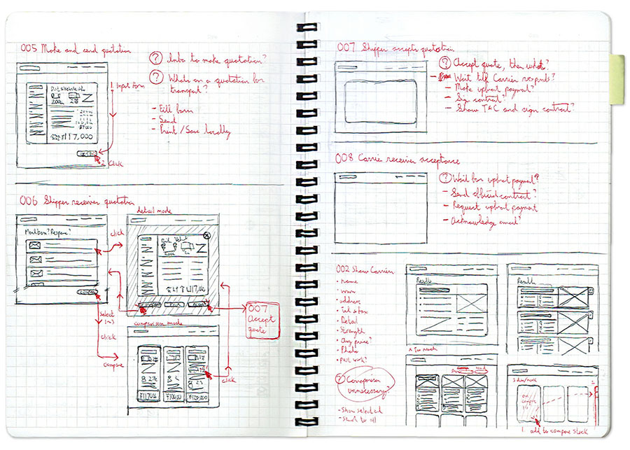

I use design to
help people
communicate
effectively

FEATURED WORK
A selection of work I did with some amazing clients around the world.


EXPERTISE
The expertise I use to help people with the power of Ink, Pixel, and Code.

METHODOLOGY
Ensuring we approach the problem with an appropriate perspective and determine which methods return value.

DESIGN
Communicating information effectively with stakeholders and designing a solution that is visually appealing.

DEVELOPMENT
Providing the solution with functionality that is intuitive, engaging, and flexible.
ABOUT ME
I'm a front-end developer and visual designer that was born in Japan. Ever since I started designing posters in high school, I began thinking about how communication can be achieved effectively.